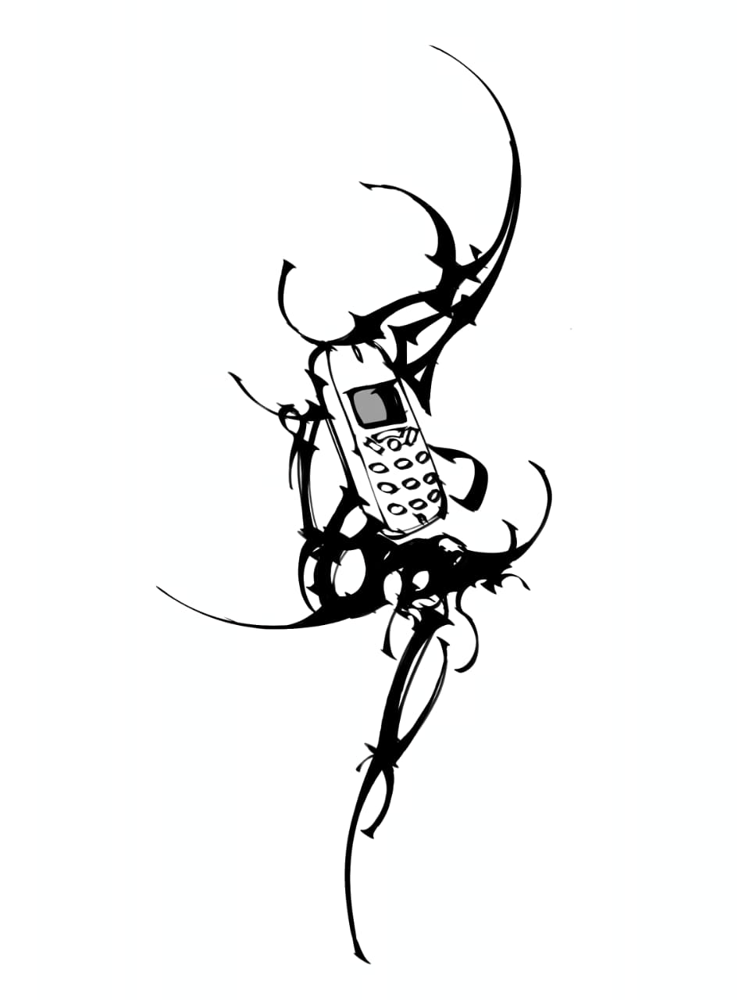
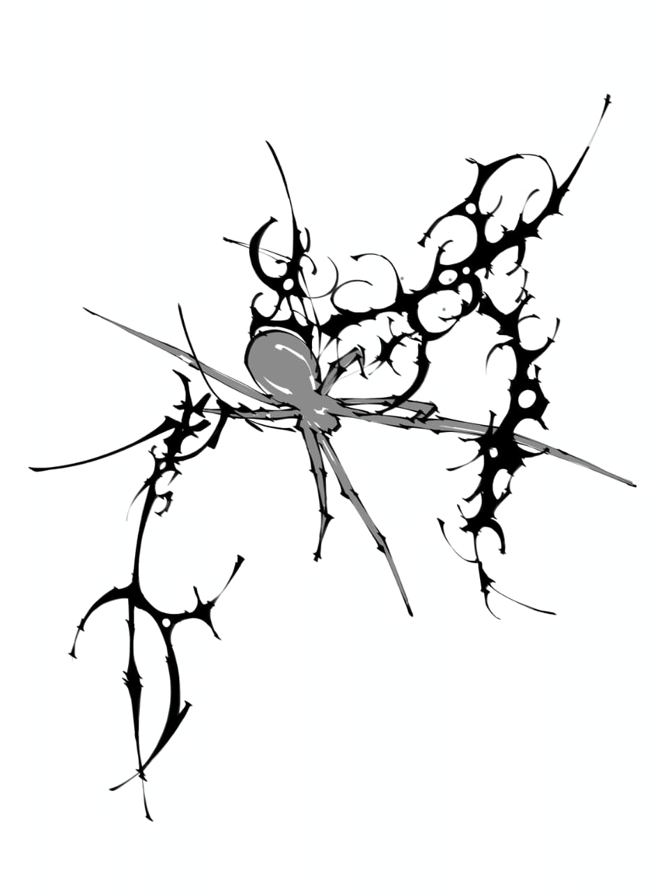

Works

Thornscript

Signal Bloom

I’m drawn to the language of symbols — modern, arcane, or invented. Cyber-sigilism is my way of merging old magic with new circuitry: ancient runes reborn through a digital lens. When you sit in my chair, you’re not just getting a tattoo — you’re wearing an echo, a whisper of what you’ve survived or what you’re becoming. I don’t decorate; I translate..
For commissions, collaborations, or quiet exchanges — reach through the static.
slavvaaojasha@gmail.com